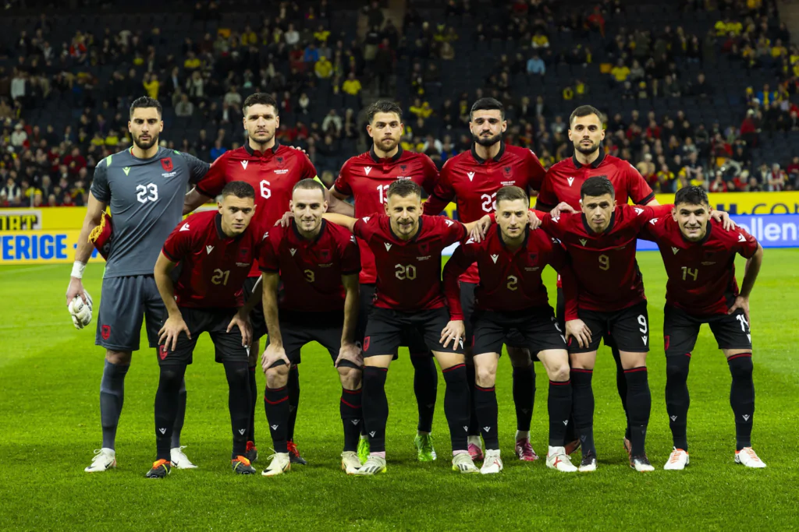

TÍTULOS
A Albânia não possui títulos na Eurocopa. A seleção albanesa participou do torneio pela primeira vez em 2016, mas não avançou além da fase de grupos. Sua participação na Eurocopa 2016 foi notável principalmente por ser sua estreia em uma competição internacional de grande porte, mas a Albânia ainda não conquistou um título europeu.